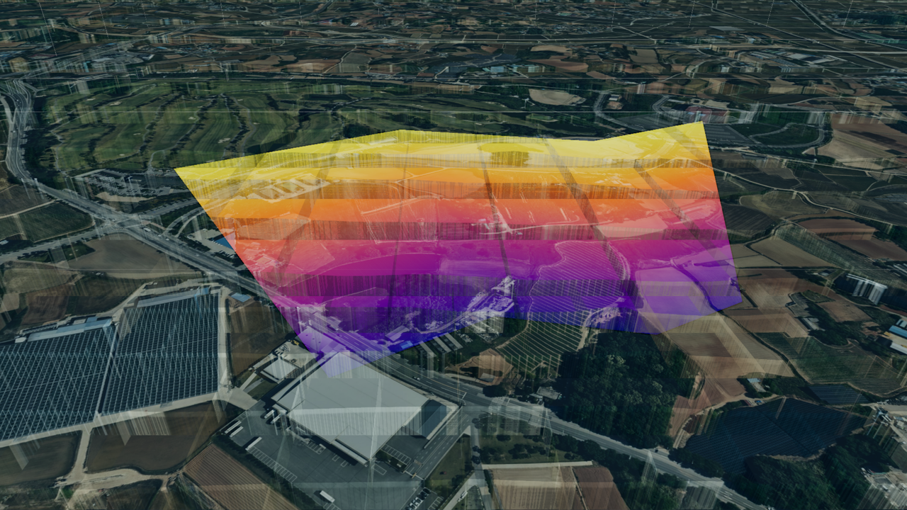
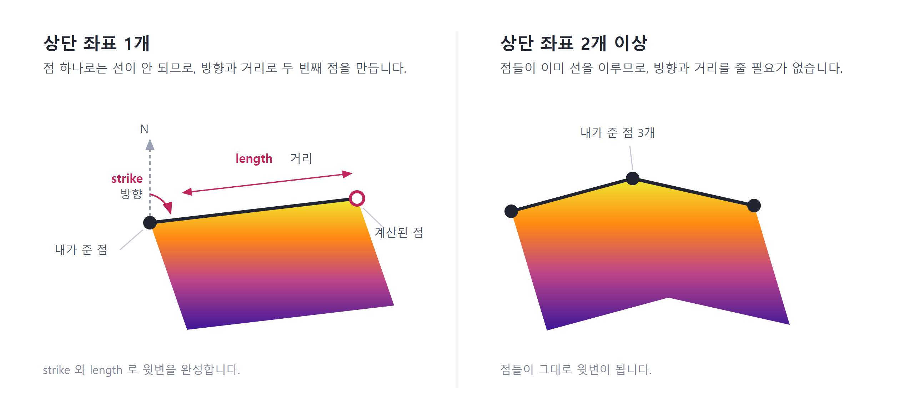
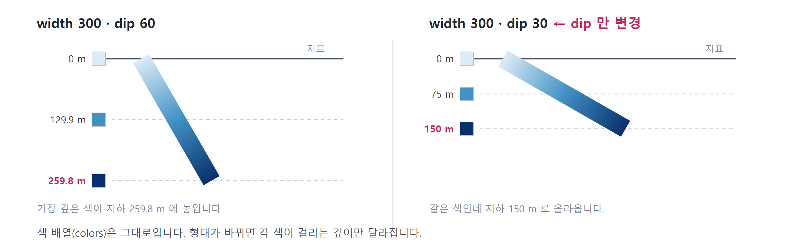

단층 (Fault)
목차

U3dFault는 지표의 상단 좌표에서 지하로 뻗어 내려가는 단층면을 표시합니다.
지질 조사 결과의 단층, 절리, 파쇄대처럼 땅속으로 기울어 들어가는 면을 지도 위에 겹쳐 볼 때 사용합니다.
단층면은 상단 좌표를 기준으로 경사각(dip)만큼 기울어져 폭(width)만큼 지하로 내려간 면으로 만들어집니다.
단층면은 지하에 만들어지므로 지하 모드를 켜야 화면에서 보입니다.
- 주향(strike): 단층면이 지표와 만나는 선의 방향입니다. 정북을 기준으로 한 각도(도)로 나타냅니다.
- 경사(dip): 단층면이 수평면에 대해 기울어진 각도(도)입니다.
90이면 수직으로 서고, 값이 작을수록 완만하게 눕습니다.
1. 단층 생성하기
U3dFault 생성자로 객체를 만들고 U3dVectorLayer.addGeometry로 레이어에 등록하면 화면에 표시됩니다.
레이어를 만들고 도형을 등록·제거하는 방법은 3D Geometry 시작하기 - 도형 등록하고 제거하기에서 설명합니다.
app과 topCoordinates는 반드시 넘겨야 합니다.
단층면은 지형 고도와 수직 축척을 참조해 만들어지므로 앱 객체가 필요하고, 상단 좌표가 있어야 면의 위치가 정해집니다.
width도 함께 지정합니다.
생략하면 면의 깊이가 정해지지 않아 형상이 만들어지지 않습니다.
API
U3dFault(opt) : 단층 객체를 생성하는 생성자
매개변수
opt(object) : 단층 생성 옵션opt.app(U3dApp) : 앱 객체. 필수opt.topCoordinates(Array<GeoPositionVector3>) : 단층 상단 좌표 배열 (위경도, EPSG:4326). 필수opt.width(number) : 경사 방향으로 내려가는 폭(m). 필수opt.length(number) : 주향 방향 길이(m). 상단 좌표가 하나일 때 사용. 기본값:0opt.dip(number) : 경사각(도). 기본값:0opt.dtop(number) : 단층 상단부의 깊이(m). 기본값:0opt.strike(number) : 정북 기준 주향 각도(도). 상단 좌표가 하나일 때 사용. 기본값:0opt.name(string) : 객체 이름opt.colors(Array<ColorRepresentation>) : 깊이별 그라디언트 색상 배열(2~10개)opt.opacity(number) : 투명도(0~1). 기본값:0.7opt.outline(boolean) : 외곽선 표시 여부. 기본값:falseopt.lineWidth(number) : 외곽선 두께(화면 픽셀). 기본값:2opt.fadeStartDepth(number) : 투명도 감소가 시작되는 깊이(m). 기본값:3000opt.properties(KeyValue) : 사용자 정의 속성정보
API
U3dApp.setUnderGroundMode(enable) : 지하 모드를 켜고 끄는 함수
매개변수
enable(boolean) :true면 지하 모드
API
U3dApp.setEnableOpacityImageLayers(enable) : 영상 레이어 투명 처리 사용 여부를 설정하는 함수
매개변수
enable(boolean) :true면 영상 레이어를 반투명하게 처리
API
U3dApp.setOpacityImageLayers(opacity) : 영상 레이어의 투명도를 설정하는 함수
매개변수
opacity(number) : 투명도(0~1)
1. 단층 생성 예제
지하 모드를 켜고 지표 영상을 반투명하게 만들면, 지상 시점에서도 지하의 단층면이 비쳐 보입니다.
const app = new GeOnDT.U3dAPP({containername: 'map'});
const vectorLayer = new GeOnDT.vector.U3dVectorLayer({name: 'vector'});
app.setUnderGroundMode(true); // 지하 모드
app.setEnableOpacityImageLayers(true); // 지표를 반투명하게
app.setOpacityImageLayers(0.5);
const fault = new GeOnDT.geom.U3dFault({
name: 'fault_01',
app: app,
topCoordinates: [new THREE.Vector3(126.9393, 37.5194, 0)],
width: 300, // 경사 방향 폭
length: 400, // 주향 방향 길이
dip: 60 // 경사각
});
vectorLayer.addGeometry(fault);
2. 단층면 형태 지정하기
단층면의 모양은 상단 좌표와 아래 값들로 정해집니다.
width: 경사면을 따라 내려가는 폭dip: 면이 수평에서 기울어진 각도dtop: 단층 상단부의 깊이strike: 면이 뻗어 나갈 방향length: 면이 뻗어 나갈 거리
width와 dip — 이 둘이 단층면이 도달하는 깊이를 정합니다.
같은 width라도 dip이 클수록 더 깊은 곳까지 내려갑니다.
dtop — 지표에 드러나지 않고 땅속 일정 깊이에서 시작하는 단층을 표현할 때 사용합니다.
strike와 length — 상단 좌표가 하나일 때, 면이 어느 방향으로 얼마나 뻗을지를 정합니다.
단층면은 지표 쪽의 윗변 하나를 잡고, 그 변을 dip 각도로 width만큼 땅속으로 내려 만든 면입니다.
윗변은 선이라서 점이 두 개 필요합니다.
그래서 상단 좌표를 하나만 주면 strike(방향)와 length(거리)로 두 번째 점을 계산해 윗변을 완성하고, 두 개 이상 주면 그 점들이 그대로 윗변이 됩니다.

| 상단 좌표 | 만들어지는 단층면 | strike / length |
|---|---|---|
| 1개 | 지정한 방향으로 뻗은 면 하나 | 필요 |
| 2개 이상 | 좌표를 이은 선을 따라 꺾이는 면 | 불필요 |
조사 결과가 단층선 형태로 주어질 때는 좌표를 그대로 넣으면 됩니다.
이때는 방향과 길이가 좌표에서 정해집니다.
생성 후 형태를 바꿀 때는 setParam을 사용합니다.
API
U3dFault.setParam(param) : 단층 속성을 갱신하고 형태를 다시 만드는 함수
매개변수
param(object) : 변경할 속성 객체param.width(number) : 경사 방향 폭(m)param.length(number) : 주향 방향 길이(m)param.dip(number) : 경사각(도)param.dtop(number) : 상단부 깊이(m)param.strike(number) : 주향 각도(도)param.colors(Array<ColorRepresentation>) : 깊이별 그라디언트 색상 배열(2~10개)param.opacity(number) : 투명도(0~1)param.outline(boolean) : 외곽선 표시 여부param.lineWidth(number) : 외곽선 두께(화면 픽셀)param.fadeStartDepth(number) : 투명도 감소가 시작되는 깊이(m)
API
U3dFault.getParam() : 현재 단층 속성을 반환하는 함수
반환값
return(object) : 폭·길이·경사각·색상 등 현재 속성 객체
API
U3dFault.addPosition(x, y, z) : 상단 좌표를 하나 추가하는 함수
매개변수
x(number) : 경도y(number) : 위도z(number) : 고도(m)
1. 경사각 변경 예제
같은 폭이라도 경사각을 올리면 단층면이 더 깊은 곳까지 내려갑니다.
현장 관측값이 갱신되었을 때 객체를 다시 만들지 않고 형태만 조정할 수 있습니다.
fault.setParam({dip: 80});
2. 상단부 깊이 지정 예제
지표에 드러나지 않고 지하 200m 아래에서 시작하는 단층을 표현합니다.
fault.setParam({dtop: 200});
3. 주향 방향 지정 예제
상단 좌표가 하나일 때, 면이 어느 방향으로 얼마나 뻗을지를 정합니다.
fault.setParam({strike: 45, length: 800});
4. 단층선을 따라 만드는 예제
조사 결과가 여러 점으로 주어질 때는 상단 좌표를 모두 넣어 꺾인 단층면을 만듭니다.
const fault = new GeOnDT.geom.U3dFault({
app: app,
topCoordinates: [
new THREE.Vector3(126.9360, 37.5180, 0),
new THREE.Vector3(126.9395, 37.5200, 0),
new THREE.Vector3(126.9430, 37.5195, 0)
],
width: 300,
dip: 70
});
vectorLayer.addGeometry(fault);
3. 깊이별 색상 지정하기
단층면은 단색이 아니라 깊이에 따라 변하는 그라디언트로 그려집니다.
어느 부분이 얕고 어느 부분이 깊은지를 색만 보고 판단할 수 있습니다.
색을 다루는 값은 세 가지입니다.
colors: 깊이에 따라 적용할 색상 배열fadeStartDepth: 이 깊이보다 깊은 부분을 흐리게 만드는 기준getDepthColorStops: 각 색이 실제로 걸린 깊이를 조회
colors — 2~10개의 색을 넣습니다.
배열의 첫 번째 색이 가장 깊은 곳에, 마지막 색이 지표 쪽에 적용됩니다.
지정하지 않으면 보라에서 노랑으로 이어지는 기본 5색 그라디언트가 사용됩니다.
fadeStartDepth — 이 깊이보다 더 내려간 부분을 점점 투명하게 만듭니다.
깊은 쪽을 흐리게 두면 지표 근처의 단층 형태가 더 잘 드러납니다.
getDepthColorStops — 각 색이 실제로 어느 깊이에 놓였는지 돌려줍니다.
색이 놓이는 깊이는 고정된 값이 아닙니다.
단층면이 도달하는 깊이가 width와 dip에 따라 달라지므로, 색 배열이 같아도 각 색에 대응하는 깊이는 바뀝니다.
아래는 색 세 개를 그대로 두고 dip만 60에서 30으로 바꾼 경우입니다.dip은 단층면이 수평에서 기울어진 각도이므로, 값이 작을수록 면이 눕고 도달하는 깊이도 얕아집니다.

그래서 화면에 깊이 범례를 그릴 때 깊이를 직접 계산해 넣으면, 형태를 바꾸는 순간 범례가 실제 단층면과 어긋납니다.getDepthColorStops가 돌려준 값을 그대로 쓰면 그럴 일이 없습니다.
API
U3dFault.setFadeStartDepth(depth) : 투명도 감소가 시작되는 깊이를 설정하는 함수
매개변수
depth(number) : 깊이(m)
API
U3dFault.getFadeStartDepth() : 투명도 감소가 시작되는 깊이를 반환하는 함수
반환값
return(number) : 깊이(m)
API
U3dFault.getDepthColorStops() : 깊이별 색상 구간 정보를 반환하는 함수
반환값
return(Array<object>) : 색상 구간 배열. 가장 깊은 곳부터 지표 순서return[].ratio(number) : 전체 깊이에 대한 비율.1이 가장 깊은 곳,0이 지표return[].depth(number) : 지표에서 잰 깊이(m)return[].color(Color) : 해당 지점의 색상
API
U3dFault.setOpacity(opacity) : 투명도를 설정하는 함수
매개변수
opacity(number) : 투명도(0~1).0이면 완전 투명,1이면 불투명
1. 색상 배열 지정 예제
깊은 곳은 진한 남색, 지표 쪽은 옅은 하늘색으로 두어 깊이감을 강조합니다.
fault.setParam({
colors: ['#08306b', '#4292c6', '#deebf7'] // 최대 깊이 → 지표 순서
});
2. 깊은 구간 흐리게 만들기 예제
관심 구간이 얕은 쪽일 때 깊은 부분을 흐리게 하면 화면이 덜 복잡해집니다.
fault.setFadeStartDepth(500); // 500m부터 서서히 투명해집니다.
3. 범례용 색상 구간 조회 예제
화면 한쪽에 깊이 범례를 그릴 때, 색과 깊이를 짝지어 그대로 사용합니다.
const stops = fault.getDepthColorStops();
stops.forEach(stop => {
console.log(stop.depth, stop.color.getHexString());
});
// 259.8 '08306b' ← 가장 깊은 곳
// 129.9 '4292c6'
// 0 'deebf7' ← 지표
4. 외곽선과 강조 표시하기
외곽선 — 단층면 여러 개가 겹쳐 보일 때 각 면의 경계를 구분해 줍니다.
두께는 화면 픽셀 단위라 지도를 확대·축소해도 일정하게 보입니다.
강조 — 사용자가 목록에서 특정 단층을 선택했을 때 setHighLight로 색과 외곽선을 한 번에 바꿉니다.
선택을 해제할 때는 resetHighLight로 원래 색상과 투명도로 되돌립니다.
API
U3dFault.setUseLine(use) : 외곽선 표시 여부를 설정하는 함수
매개변수
use(boolean) :true면 외곽선을 표시
API
U3dFault.setLineWidth(width) : 외곽선 두께를 설정하는 함수
매개변수
width(number) : 두께(화면 픽셀)
API
U3dFault.setHighLight(color, opacity) : 단층면을 강조 표시하는 함수
매개변수
color(ColorRepresentation) : 강조 색상. 기본값:0x22aa22opacity(number) : 강조 투명도. 기본값:0.8
API
U3dFault.resetHighLight() : 강조 표시를 해제하고 원래 상태로 되돌리는 함수
1. 외곽선 표시 예제
단층면이 여러 개 겹칠 때 경계를 또렷하게 만듭니다.
fault.setUseLine(true);
fault.setLineWidth(4);
2. 선택 강조 예제
목록에서 단층을 클릭했을 때 해당 면만 눈에 띄게 바꿉니다.
fault.setHighLight('#ffcc00', 0.9);
3. 강조 해제 예제
다른 단층을 선택하기 전에 이전 강조를 되돌립니다.
fault.resetHighLight();
5. 속성정보와 해제
도형에는 id, 이름, 업무 데이터 같은 부가 정보를 key-value 형태로 담아 둘 수 있습니다.
새 속성을 넣을 때는 addProperties, 기존 값을 바꿀 때는 changeProperties, 전체를 통째로 교체할 때는 setProperties를 사용합니다.
더 이상 쓰지 않는 단층은 dispose로 정리합니다.
API
U3dFault.setId(id) : 식별자를 설정하는 함수
매개변수
id(string) : 식별자
API
U3dFault.getId() : 식별자를 반환하는 함수
반환값
return(string) : 식별자
API
U3dFault.getProperties() : 사용자 정의 속성정보를 반환하는 함수
반환값
return(KeyValue) : 사용자 정의 속성정보
API
U3dFault.setProperties(input) : 사용자 정의 속성정보 전체를 설정하는 함수
매개변수
input(KeyValue | string) : 속성 객체 또는 JSON 문자열
API
U3dFault.addProperties(key, value) : 속성정보를 하나 추가하는 함수
매개변수
key(string) : 속성 식별키value(*) : 속성 값
API
U3dFault.changeProperties(key, value) : 기존 속성정보의 값을 변경하는 함수
매개변수
key(string) : 변경할 속성 식별키value(*) : 속성 값
API
U3dFault.removeProperties(key) : 속성정보를 제거하는 함수
매개변수
key(string) : 제거할 속성 식별키
API
U3dFault.dispose() : 단층과 관련 리소스를 해제하는 함수
1. 속성정보 다루기 예제
fault.setId('F-2024-011');
fault.addProperties('단층명', '양산단층');
fault.addProperties('조사연도', 2024);
fault.changeProperties('조사연도', 2025); // 기존 값 변경
fault.removeProperties('조사연도'); // 속성 제거
console.log(fault.getProperties()); // {단층명: '양산단층'}
2. 해제 예제
레이어에서 먼저 제거한 뒤 해제합니다.
vectorLayer.removeGeometry(fault);
fault.dispose();